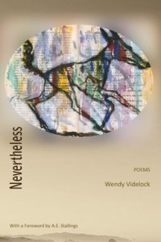

Wendy Videlock’s “Nevertheless” 
Hitherto, my only contact with Wendy’s work was the occasional reference in online forums and her chapbook, What’s That Supposed to Mean, from Exot Books, which I bought because I was intrigued by her reputation for minimalism. I found charm and wit and occasional pathos. I got a glimpse of what her enthusiasts see and returned to it from time to time, finding more. But I would not have sought out a longer collection if I had not been asked to review it. Bad call.
Never, they say, judge a book by its cover. But just this once, do. It is surprisingly heavy for its size, which gives a pleasing impression of quality. It is soft and pliable. The design is perfectly balanced and the illustration made me catch my breath. A sketchy coyote tiptoes sneakily across the cover, his questing snout almost sliced off as he sniffs the right-hand edge, eager to lift it up and go inside. Me, too. And when I found the poem that started thus:
Coyote,
We hardly know you.
Which, like coyote
nose, is the point…
I laughed aloud.
I was once horrified to hear the National Poet of Wales tell a theatreful of hopefuls that she tended to reject any poem that was centred on the page. Bigot! I cried. But I have to confess that I usually distrust small, narrow poems. I am always sniffing for triviality in the ones that look like till receipts, though because of my horror of blanket condemnation I try especially hard with them. But I didn’t have to make much effort with this one:
Is the bigot
as much a bane,
as much a slur,
as overstuffed
with fear and hate
as those who
relish the word.
Good question, I conceded, through a rueful grin. This is one of many examples I could have picked where the poem, read, digested and filed in the head, takes up more room than one would have expected because it is deceptively greater than the sum of its parts.
Others, though, are harder to engage with. “Of Coverings”, for instance, is so subjective and unstructured, so trickle-thin, that I (in bigot mode) would have hastened past it were it not for Alicia Stallings’s introduction which made me go back and look again. I am looking at it now. I have a long thin list of words; after each one is a comma, a linebreak and a stanza break. Each one a plural noun but with a single adjective round about the middle, an absence of comma being all there is to tie it to the next noun, which is a double linespace away. If I sort out the rhymes and fit the words together in exactly the same order, I get a speeded-up four-line handkerchief of a poem that I could skip to. But I now feel I have broken one of Wendy’s poems to make one of mine and since I can understand mine and not hers I feel this somehow makes me a Bad Person. My lower lip quivers.
Trying to come to terms with these feelings, I look at pages 10 and 11. Two poems facing one another: Mercury and
With Large Dark Eyes
With large dark eyes and summer skin
she walked you to the wooded door
then touched her hair, and let you in.
She did not move you with a word
nor kiss your eyes closed with the dusk;
it was not you who woke and heard
her even sleep, the undone night
and knew at once you were alive.
It was not you. The crooked light
of time does not remember who
was who, or who showed whom the door,
or what love knows when it is new.
Take heart.
This is the best that it can do.
I found the left-hand page difficult to negotiate and the right-hand page simply exquisite. It was in the cold mechanics of transferring the poems to this document that I discovered where my difficulty lay. It is the linebreaks. “Mercury’s” I could not justify, though I kept stopping to try, while “With Large Dark Eyes” has an inbuilt logic that I find comforting. My prejudice again, dammit.
In relation to the placing of those two poems, I’d like to mention the editing, which shows up like a silver streak all through the book. Things facing each other, together, waiting on the following page to say Boo! when you turn over. Scrumptious.
The main thing I learned about Wendy Videlock’s poetry as I relished the collection is that it cannot be classified. Apart from her fragile lists, full of white space to cogitate in, there are short sharp aperçus along the lines of Ogden Nash or Spike Milligan:
The Idle
He watches ball.
She throws a fit.
She cannot stand
to see him sit.
Or
Wet Cement
The reason that the sky
is blue
has something to do
with the distance between it
and you.
The wordplay is irresistible.
There are one or two real crowd-pleasers that I dare swear will have universal appeal. “What Humans Do” and “My Moses” have clear voices that sing of young, wild America. There are sonnets or not-quite-sonnets that capture the spirit of the form, like “Riverside”, and tiny things like “A Mark of Age”, that lodge in the heart like splinters. Others, like “Vanity Flare”, cry out to be spoken aloud.
I suspect that for every reader of this book there will be Yes! poems, and No! poems. There will also be a fair quantity of Huh? poems. As an unreconstructed formalist, I preferred the poems of more apparent substance, but realising how long it has taken me to write this assessment and how my view on many of the pieces changed as I became familiar with them, I can say, hand on heart, that not one of them has left me unmoved in some way. I will keep this book within reach, knowing that I will go on finding new things in it for a long time, and that it will keep on changing my mind. Had I not been asked to review it, I might never have read it. And what a loss that would have been.
|